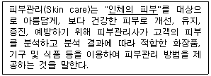
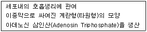
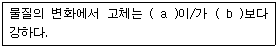

미용사(피부) (2010-01-31 기출문제)
1과목: 피부미용학
1. 딥클렌징의 분류가 옳은 것은?
- 고마쥐 - 물리적 각질관리
- 스크럽 - 화학적 각질관리
- AHA - 물리적 각질관리
- 효소 - 물리적 각질관리
(정답률: 76%)

2. 다음 중 노폐물과 독소 및 과도한 체액의 배출을 원활하게 하는 효과에 가장 적합한 관리방법은?
- 지압
- 인디안 헤드 마사지
- 림프 드레니지
- 반사 요법
(정답률: 94%)
3. 안면 클렌징 시술시의 주의사항 중 틀린 것은?
- 고객의 눈이나 코 속으로 화장품이 들어가지 않도록 한다.
- 근육결 반대방향으로 시술한다.
- 처음부터 끝까지 일정한 속도와 리듬감을 유지하도록 한다.
- 동작은 근육이 처지지 않게 한다.
(정답률: 88%)
4. 밑줄 친 내용에 대한 범위의 설명으로 맞는 것은? (단, 국내법상의 구분이 아닌 일반적인 정의 측면의 내용을 말함)(문제 오류로 여기서는 나번을 정답 처리 합니다.)(문제 4번은 논란이 많았던 문제로 '법적이 아닌 일반적 정의' 측면에서 두피는 피부에 포함시킨다는 현실적 상황을 인정하여 가답안은 '가'로 발표되었지만 문제의견 민원에 의해 법적인 정의 및 기타 의견 등을 수용하여 확정답안은 '나'로 바뀐 문제입니다.)

- 두피를 포함한 얼굴 및 전신의 피부를 말한다.
- 두피를 제외한 얼굴 및 전신의 피부를 말한다.
- 얼굴과 손의 피부를 말한다.
- 얼굴의 피부만을 말한다.
(정답률: 83%)
5. 일시적 제모방법 가운데 겨드랑이 및 다리의 털을 제거하기 위해 피부미용실에서 가장 많이 사용되는 제모방법은?
- 면도기를 이용한 제모
- 레이져를 이용한 제모
- 족집게를 이용한 제모
- 왁스를 이용한 제모
(정답률: 93%)
6. 효소필링이 적합하지 않은 피부는?
- 각질이 두껍고 피부표면이 건조하여 당기는 피부
- 비립종을 가진 피부
- 화이트헤드,블랙헤드를 가지고 있는 지성피부
- 자외선에 의해 손상된 피부
(정답률: 73%)
7. 상담 시 고객에 대해 취해야 할 사항 중 옳은 것은?
- 상담 시 다른 고객의 신상정보, 관리정보를 제공한다.
- 고객의 사생활에 대한 정보를 정확하게 파악한다.
- 고객과의 친밀감을 갖기 위해 사적으로 친목을 도모한다.
- 전문적인 지식과 경험을 바탕으로 관리방법과 절차 등에 관해 차분하게 설명해준다.
(정답률: 92%)
8. 습포에 대한 설명으로 틀린 것은?
- 타월은 항상 자비소독 등의 방법을 실시한 후 사용한다.
- 온습포는 팔의 안쪽에 대어서 온도를 확인한 후 사용한다.
- 피부 관리의 최종단계에서 피부의 경직을 위해 온습포를 사용한다.
- 피부 관리시 사용되는 습포에는 온습포와 냉습포의 두 종류가 일반적이다.
(정답률: 91%)
9. 건성 피부의 특징과 가장 거리가 먼 것은?
- 각질층의 수분이 50% 이하로 부족하다.
- 피부가 손상되기 쉬우며 주름 발생이 쉽다.
- 피부가 얇고 외관으로 피부결이 섬세해 보인다.
- 모공이 작다.
(정답률: 69%)
10. 팩의 목적이 아닌 것은?
- 노폐물의 제거와 피부정화
- 혈액순환 및 신진대사 촉진
- 영양과 수분공급
- 잔주름 및 피부건조 치료
(정답률: 81%)
11. 림프 드레니지를 금해야 하는 증상에 속하지 않은 것은?
- 심부전증
- 혈전증
- 켈로이드증
- 급성염증
(정답률: 60%)
12. 피부유형에 맞는 화장품 선택이 아닌 것은?
- 건성피부- 유분과 수분이 많이 함유된 화장품
- 민감성피부-향, 색소, 방부제를 함유하지 않거나 적게 함유된 화장품
- 지성피부- 피지조절제가 함유된 화장품
- 정상피부- 오일이 함유되어 있지 않은 오일 프리(Oil free) 화장품
(정답률: 85%)
13. 매뉴얼 테크닉 시 가장 많이 이용되는 기술로 손바닥을 평평하게 하고 손가락을 약간 구부려 근육이나 피부 표면을 쓰다듬고 어루만지는 동작은?
- 프릭션(friction)
- 에플로라지(effleurage)
- 페트리사지(petrissage)
- 바이브레이션(vibration)
(정답률: 81%)
14. 화학적 제모와 관련된 설명이 틀린 것은?
- 화학적 제모는 털을 모근으로부터 제거한다.
- 제모제품은 강알칼리성으로 피부를 자격하므로 사용 전 첩포시험을 실시하는 것이 좋다.
- 제모제품 사용 전 피부를 깨끗이 건조시킨 후 적정량을 바른다.
- 제모 후 산성화장수를 바른 뒤에 진정로션이나 크림을 흡수시킨다.
(정답률: 61%)
15. 클렌징 순서가 가장 적합한 것은?
- 클렌징손동작 → 화장품제거 → 포인트메이크업 클렌징 → 클렌징제품도포 → 습포
- 화장품제거 → 포인트메이크업클렌징 → 클렌징제품도포 → 클렌징손동작 →습포
- 클렌징제품도포 → 클렌징손동작 → 포인트메이크업클렌징 → 화장품제거 → 습포
- 포인트메이크업클렌징 → 클렌징제품도포 → 클렌징손동작 → 화장품제거 →습포
(정답률: 84%)
16. 매뉴얼 테크닉 시술에 대한 내용으로 틀린 것은?
- 매뉴얼 테크닉시 모든 동작이 연결될 수 있도록 해야 한다.
- 매뉴얼 테크닉시 중추부터 말초 부위로 향해서 시술해야 한다.
- 매뉴얼 테크닉시 손놀림도 균등한 리듬을 유지해야 한다.
- 매뉴얼 테크닉시 체온의 손실을 막는 것이 좋다.
(정답률: 76%)
17. 레몬 아로마 에센셜 오일의 사용과 관련된 설명으로 틀린 것은?
- 무기력한 기분을 상승시킨다.
- 기미, 주근깨가 있는 피부에 좋다.
- 여드름, 지성피부에 사용된다.
- 진정작용이 뛰어나다.
(정답률: 49%)
18. 다음 중 피지분비가 많은 지성, 여드름성 피부의 노폐물 제거에 가장 효과적인 팩은?
- 오이팩
- 석고팩
- 머드팩
- 알로에겔팩
(정답률: 82%)
19. 체내에서 근육 및 신경의 자극 전도, 삼투압 조절 등의 작용을 하며, 식욕에 관계가 깊기 때문에 부족하면 피로감, 노동력의 저하 등을 일으키는 것은?
- 구리(Cu)
- 식염(NaCl)
- 요오드(I)
- 인(P)
(정답률: 51%)
20. 접촉성 피부염의 주된 알러지원이 아닌 것은?
- 니켈
- 금
- 수은
- 크롬
(정답률: 76%)
2과목: 피부학 및 해부생리학
21. 다음 중 원발진에 해당하는 피부변화는?
- 가피
- 미란
- 위축
- 구진
(정답률: 71%)
22. 식후 12~16시간 경과되어 정신적, 육체적으로 아무것도 하지 않고 가장 안락한 자세로 조용히 누워있을 때 생명을 유지하는 데 소요되는 최소한의 열량을 무엇이라 하는가?
- 순환대사량
- 기초대사량
- 활동대사량
- 상대대사량
(정답률: 85%)
23. 표피 중에서 피부로부터 수분이 증발하는 것을 막는 층은?
- 각질층
- 기저층
- 과립층
- 유극층
(정답률: 48%)
24. 다음 내용에 해당하는 세포질 내부의 구조물은?

- 형질내세망(Endolpasmic Reticulum)
- 용해소체(Lysosome)
- 골기체(Golgi apparatus)
- 사립체(Mitochondria)
(정답률: 55%)
25. 에크린 한선에 대한 설명으로 틀린 것은?
- 실밥을 둥글게 한 것 같은 모양으로 진피 내에 존재한다.
- 사춘기 이후에 주로 발달한다.
- 특수한 부위를 제외한 거의 전신에 분포한다.
- 손바닥, 발바닥, 이마에 가장 많이 분포한다.
(정답률: 47%)
26. 셀룰라이트(cellulite)의 설명으로 옳은 것은?
- 수분이 정체되어 부종이 생긴 현상
- 영양섭취의 불균형 현상
- 피하지방이 축척되어 뭉친 현상
- 화학물질에 대한 저항력이 강한 현상
(정답률: 90%)
27. 피부에 계속적인 압박으로 생기는 각질층의 증식현상이며, 원추형의 국한성 비후증으로 경성과 연성이 있는 것은?
- 사마귀
- 무좀
- 굳은살
- 티눈
(정답률: 67%)
28. 신경계 중 중추신경계에 해당되는 것은?
- 뇌
- 뇌신경
- 척수신경
- 교감신경
(정답률: 55%)
29. 세포막을 통한 물질의 이동 방법이 아닌 것은?
- 여과
- 확산
- 삼투
- 수축
(정답률: 70%)
30. 혈액의 구성 물질로 항체생산과 감염의 조절에 가장 관계가 깊은 것은?
- 적혈구
- 백혈구
- 혈장
- 혈소판
(정답률: 67%)
3과목: 화장품학
31. 뇨의 생성 및 배설과정이 아닌 것은?
- 사구체 여과
- 사구체 농축
- 세뇨관 재흡수
- 세뇨관 분비
(정답률: 53%)
32. 다음 중 뼈의 기본구조가 아닌 것은?
- 골막
- 골외막
- 골내막
- 심막
(정답률: 89%)
33. 내분비와 외분비를 겸한 혼합성 기관으로 3대 영양소를 분해할 수 있는 소화효소를 모두 가지고 있는 소화기관은?
- 췌장
- 간
- 위
- 대장
(정답률: 67%)
34. 승모근에 대한 설명으로 틀린 것은?
- 기시부는 두개골의 저부이다.
- 쇄골과 견갑골에 부착되어 있다.
- 지배신경은 견갑배신경이다.
- 견갑골의 내전과 머리를 신전한다.
(정답률: 44%)
35. 피부에 미치는 갈바닉 전류의 양극(+)의 효과는?
- 피부진정
- 모공세정
- 혈관확장
- 피부유연화
(정답률: 55%)
36. 테슬라 전류(Tesla current)가 사용되는 기기는?
- 갈바닉(The Galvanic Machine)
- 전기분무기
- 고주파기기
- 스팀기(The vapor izer)
(정답률: 52%)
37. 스티머 사용 시 주의사항이 아닌 것은?
- 피부에 따라 적정 시간을 다르게 한다.
- 스팀 분사방향은 코를 향하도록 한다.
- 스티머 물통에 물을 2/3정도 적당량 넣는다.
- 물통을 일반세제로 씻는 것은 고장의 원인이 될 수 있으므로 사용을 금한다.
(정답률: 84%)
38. 지성피부의 면포추출에 사용하기 가장 적합한 기기는?
- 분무기
- 전동브러쉬
- 리프팅기
- 진공흡입기
(정답률: 79%)
39. 피부를 분석할 때 사용하는 기기로 짝지어진 것은?
- 진공흡입기, 패터기
- 고주파기, 초음파기
- 우드램프, 확대경
- 분무기, 스티머
(정답률: 91%)
40. 괄호 안에 알맞은 말이 순서대로 나열된 것은?

- 운동력, 기체
- 온동, 압력
- 운동력, 응력
- 응력, 운동력
(정답률: 55%)
4과목: 피부미용기기학
41. 다음 화장품 중 그 분류가 다른 것은?
- 화장수
- 클렌징 크림
- 샴푸
- 팩
(정답률: 79%)
42. 다음중 기능성 화장품의 영역이 아닌 것은?
- 피부의 미백에 도움을 주는 제품
- 피부의 주름 개선에 도움을 주는 제품
- 피부의 여드름 개선에 도움을 주는 제품
- 자외선으로부터 피부를 보호하는데 도움을 주는 제품
(정답률: 78%)
43. 다음중 바디용 화장품이 아닌 것은?
- 샤워젤
- 바스오일
- 데오도란트
- 헤어에센스
(정답률: 82%)
44. 팩에 사용되는 주성분 중 피막제 및 점도 증가제로 사용되는 것은?
- 카올린(kaolin), 탈크(talc)
- 폴리비닐알코올(PVA), 잔탄검(xanthan gum)
- 구연산나트륨(sodium citrate), 아미노산류(amino acids)
- 유동파라핀(liquid paraffin), 스쿠알렌(squalene)
(정답률: 44%)
45. 화장품의 사용목적과 가장 거리가 먼 것은?
- 인체를 청결, 미화하기 위하여 사용한다.
- 용모를 변화시키기 위하여 사용한다.
- 피부, 모발의 건강을 유지하기 위하여 사용한다.
- 인체에 대한 약리적인 효과를 주기 위해 사용한다.
(정답률: 78%)
46. 피부 거칠음의 개선, 미백, 탈모방지 등의 피부, 면역학 등을 연구하는 유용성 분야는?
- 물리학적 유용성
- 심리학적 유용성
- 화학적 유용성
- 생리학적 유용성
(정답률: 60%)
47. 아로마 오일의 사용법 중 확산법으로 맞는 것은?
- 따뜻한 물에 넣고 몸을 담근다.
- 아로마 램프나 스프레이를 이용한다.
- 수건에 적신 후 피부에 붙인다.
- 손수건, 티슈 등에 1~2방울 떨어뜨리고 심호흡을 한다.
(정답률: 63%)
48. 다음 중 파리가 매개할 수 있는 질병과 거리가 먼 것은?
- 아메바성 이질
- 장티푸스
- 발진티푸스
- 콜레라
(정답률: 42%)
49. 법정 감염병 중 제2군에 해당되는 것은?
- 디프테리아
- A형 간염
- 레지오넬라증
- 한센병
(정답률: 56%)
50. 질병전파의 개달물(介達物)에 해당되는 것은?
- 공기, 물
- 우유, 음식물
- 의복, 침구
- 파리, 모기
(정답률: 60%)
5과목: 공중위생학
51. 식품의 혐기성 상태에서 발육하여 체외독소로서 신경독소를 분비하며 치명률이 가장 높은 식중독으로 알려진 것은?
- 살모넬라 식중동
- 보톨리누스균 식중독
- 웰치균 식중독
- 알레르기성 식중독
(정답률: 75%)
52. 다음 중 상처나 피부 소독에 가장 적합한 것은?
- 석탄산
- 과산화수소수
- 포르말린수
- 차아염소산나트륨
(정답률: 87%)
53. 승홍에 소금을 섞었을 때 일어나는 현상은?
- 용액이 중성으로 되고 자극성이 완화된다.
- 용액의 기능을 2배 이상 증대시킨다.
- 세균의 독성을 중화시킨다.
- 소독대상물의 손상을 막는다.
(정답률: 45%)
54. 일반적으로 사용하는 소독제로서 에탄올의 적정 농도는?
- 30%
- 50%
- 70%
- 90%
(정답률: 73%)
55. 인체에 질병을 일으키는 병원체 중 대체로 살아있는 세포에서만 증식하고 크기가 가장 작아 전자현미경으로만 관찰할 수 있는 것은?
- 구균
- 간균
- 바이러스
- 원생동물
(정답률: 89%)
56. 미용영업자가 시장, 군수, 구청장에게 변경 신고를 하여야 하는 사항이 아닌 것은?
- 영업소의 명칭의 변경
- 영업소의 소재지의 변경
- 신고한 영업장 면적의 1/3 이상의 증감
- 영업소내 시설의 변경
(정답률: 74%)
57. 이·미용사가 이·미용업소 외의 장소에서 이·미용을 한 경우 3차 위반 행정처분기준은?
- 영업장 폐쇄명령
- 영업정지 10일
- 영업정지 1월
- 영업정지 2월
(정답률: 72%)
58. 행정처분 사항 중 1차 위반시 영업장 폐쇄명령에 해당하는 것은?
- 영업정지처분을 받고도 영업정지 기간 중 영업을 한 때
- 손님에게 성매매알선 등의 행위를 한 때
- 소독한 기구와 소독하지 아니한 기구를 각각 다른 용기에 넣어 보관하지 아니한 때
- 1회용 면도기를 손님 1인에 한하여 사용하지 아니한 때
(정답률: 74%)
59. 위생서비스평가의 결과에 따른 위생관리등급별로 영업소에 대한 위생감시를 실시할 때의 기준이 아닌 것은?
- 위생교육 실시 횟수
- 영업소에 대한 출입·검사
- 위생감시의 실시 주기
- 위생감시의 실시 횟수
(정답률: 42%)
60. 위생교육 대상자가 아닌 것은?
- 공중위생영업의 신고를 하고자 하는 자
- 공중위생영업을 승계한 자
- 공중위생영업자
- 면허증 취득 예정자
(정답률: 84%)